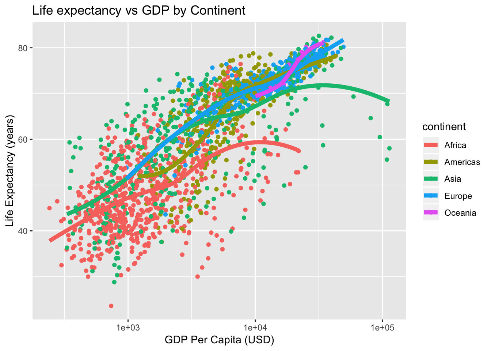
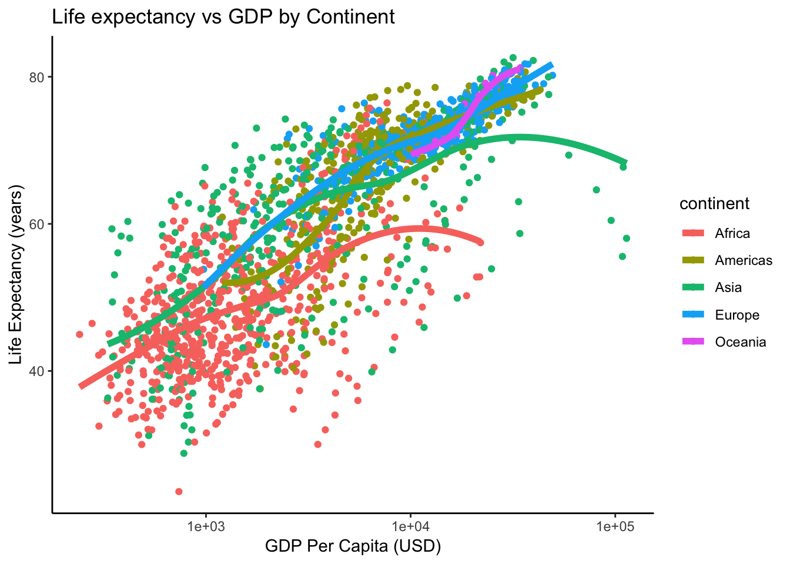

6.8 Publication-ready plots & themes
Let’s make a plot we made earlier (life expectancy versus the log of GDP per capita with points colored by continent with lowess smooth curves overlaid without the standard error ribbon):
p <- ggplot(gm, aes(gdpPercap, lifeExp))
p <- p + scale_x_log10()
p <- p + aes(col=continent) + geom_point() + geom_smooth(lwd=2, se=FALSE)Give the plot a title and axis labels:
p <- p + ggtitle("Life expectancy vs GDP by Continent")
p <- p + xlab("GDP Per Capita (USD)") + ylab("Life Expectancy (years)")By default, the “gray” theme is the usual background (I’ve changed this course website to use the black and white background for all images).
p + theme_gray()
We could also get a black and white background:
p + theme_bw()Or go a step further and remove the gridlines:
p + theme_classic()
Finally, there’s another package that gives us lots of different themes. Install it if you don’t have it already. Install all its dependencies along with it.
install.packages("ggthemes", dependencies = TRUE)library(ggthemes)
p <- ggplot(gm, aes(gdpPercap, lifeExp))
p <- p + scale_x_log10()
p <- p + aes(col=continent) + geom_point() + geom_smooth(lwd=2, se=FALSE)
p + theme_excel()
p + theme_excel() + scale_colour_excel()
p + theme_gdocs() + scale_colour_gdocs()
p + theme_stata() + scale_colour_stata()
p + theme_wsj() + scale_colour_wsj()
p + theme_economist()
p + theme_fivethirtyeight()
p + theme_tufte()Finally, to add custom colors use scale_color_manual
p + theme_tufte() + scale_color_manual(values = c("red", "orange", "yellow", "green", "blue"))Xie, Yihui. 2015. Dynamic Documents with R and Knitr. 2nd ed. Boca Raton, Florida: Chapman; Hall/CRC. http://yihui.name/knitr/.
———. 2019. Bookdown: Authoring Books and Technical Documents with R Markdown. https://CRAN.R-project.org/package=bookdown.